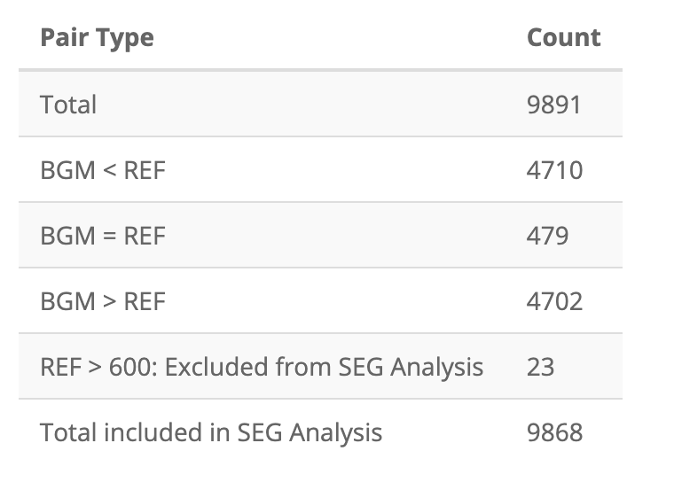
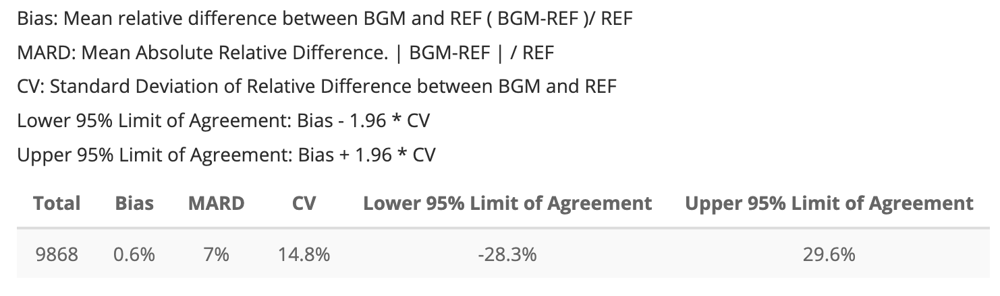
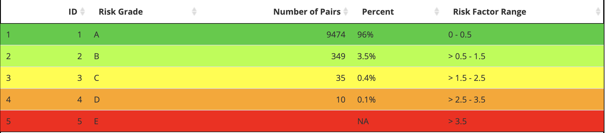
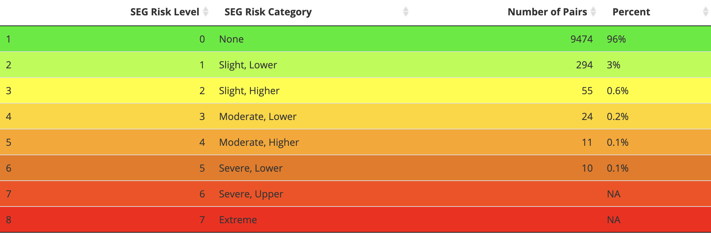
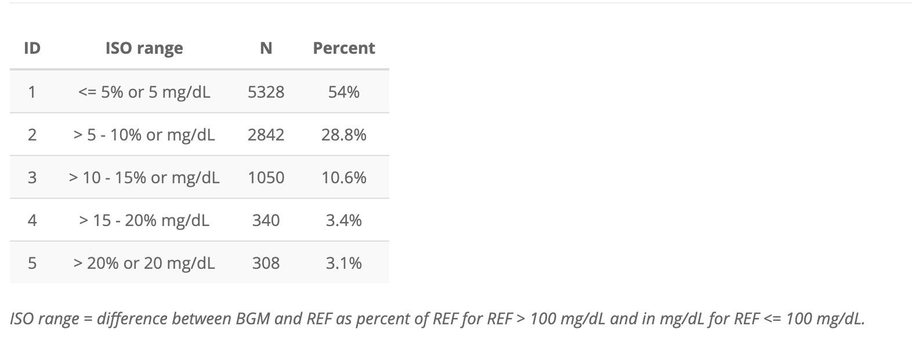
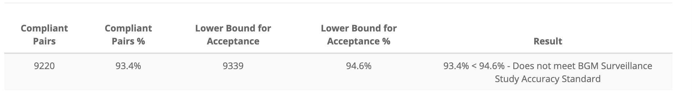

Risk Tables
risk-tables.RmdThe risk tables are created using three functions in the seg-shiny-1-3-3 repo. Through the multiple iterations of this application, different values have been used to establish these categories.
This vignette covers the development of each table function and
look-up table, and performs unit tests on the values from the
segtools functions to match the output in the application.
Load test data
The segtools package uses testthat, a common
testing framework for performing unit tests. I’ll load a test data file
used in the
GitHub repo (VanderbiltComplete.csv) below and run it
in the shiny app to generate the tables for comparison.
github_data_root <-
"https://raw.githubusercontent.com/mjfrigaard/seg-shiny-data/master/Data/"
full_sample_repo <- base::paste0(github_data_root,
"VanderbiltComplete.csv")
test_vand_comp_data <-
vroom::vroom(file = full_sample_repo, delim = ",")
glimpse(test_vand_comp_data)
#> Rows: 9,891
#> Columns: 2
#> $ BGM <dbl> 121, 212, 161, 191, 189, 104, 293, 130, 261, 147, 83, 132, 146, 24…
#> $ REF <dbl> 127, 223, 166, 205, 210, 100, 296, 142, 231, 148, 81, 131, 155, 25…Application (version 1.3.3) functions
Below are the three functions from the helpers.R
file in the application repo.
SEG variables
The SEG variables were initially created with the segTable()
function. I’ve included it below:
segTable <- function(dat) {
# 3.1 - import data frame -----
SampMeasData <- suppressWarnings(readr::read_csv(file = dat))
SampMeasData %>%
dplyr::mutate(BGM = as.double(BGM),
REF = as.double(REF)) %>%
# create bgm_pair_cat ----
dplyr::mutate(
bgm_pair_cat =
dplyr::case_when(
BGM < REF ~ "BGM < REF",
BGM == REF ~ "BGM = REF",
BGM > REF ~ "BGM > REF"
)
) |>
# 3.3 create ref_pair_2cat ----
dplyr::mutate(
ref_pair_2cat =
dplyr::case_when(
REF > 600 ~ "REF > 600: Excluded from SEG Analysis",
REF < 21 & REF <= 600 ~ "REF <21: Included in SEG Analysis"
)
) %>%
# # 3.4 create included ----
dplyr::mutate(
included =
dplyr::case_when(
REF <= 600 ~ "Total included in SEG Analysis",
REF > 600 ~ "Total excluded in SEG Analysis"
)
) %>%
# 3.5 join to RiskPairData ----
dplyr::inner_join(.,
y = RiskPairData,
by = c("BGM", "REF")
) %>%
dplyr::mutate( # 3.6 Create risk_cat variable ----
risk_cat =
base::findInterval(
x = abs_risk, # the abs_risk absolute value
vec = LookUpRiskCat$ABSLB, # the lower bound absolute risk
left.open = TRUE
) - 1
) %>%
dplyr::inner_join( # 3.7 Join to LookUpRiskCat data ----
x = ., y = LookUpRiskCat, # inner join to look-up
by = "risk_cat"
) %>%
dplyr::mutate(
risk_cat_txt = # text risk categories
dplyr::case_when(
abs_risk < 0.5 ~ "None",
abs_risk >= 0.5 & abs_risk <= 1 ~ "Slight, Lower",
abs_risk > 1 & abs_risk <= 1.5 ~ "Slight, Higher",
abs_risk > 1.5 & abs_risk <= 2.0 ~ "Moderate, Lower",
abs_risk > 2 & abs_risk <= 2.5 ~ "Moderate, Higher",
abs_risk > 2.5 & abs_risk <= 3.0 ~ "Severe, Lower",
abs_risk > 3.0 & abs_risk <= 3.5 ~ "Severe, Higher",
abs_risk > 3.5 ~ "Extreme"
)
) %>%
dplyr::mutate(
rel_diff = (BGM - REF) / REF, # relative diff
abs_rel_diff = abs(rel_diff), # abs relative diff
sq_rel_diff = rel_diff^2,
iso_diff =
if_else(REF >= 100, # condition 1
100 * abs(BGM - REF) / REF, # T 1
if_else(REF < 100, # condition 2
abs(BGM - REF), # T 2
NA_real_
), # F 2
NA_real_
), # F1
iso_range = # # 4.3.16 create iso range variable ----
dplyr::case_when(
# # A tibble: 5 x 2
# ID iso_range
# <int> <chr>
# 1 1 <= 5% or 5 mg/dL
# 2 2 > 5 - 10% or mg/dL
# 3 3 > 10 - 15% or mg/dL
# 4 4 > 15 - 20% mg/dL
# 5 5 > 20% or 20 mg/dL
iso_diff <= 5 ~ "<= 5% or 5 mg/dL",
iso_diff > 5 & iso_diff <= 10 ~ "> 5 - 10% or mg/dL",
iso_diff > 10 & iso_diff <= 15 ~ "> 10 - 15% or mg/dL",
iso_diff > 15 & iso_diff <= 20 ~ "> 15 - 20% mg/dL",
iso_diff > 20 ~ "> 20% or 20 mg/dL"),
risk_grade = dplyr::case_when(
abs_risk >= 0.0 & abs_risk < 0.5 ~ "A",
abs_risk >= 0.5 & abs_risk < 1.0 ~ "B",
abs_risk >= 1.0 & abs_risk < 2.0 ~ "C",
abs_risk >= 2.0 & abs_risk < 3.0 ~ "D",
abs_risk >= 3.0 ~ "E"
),
risk_grade_txt = dplyr::case_when(
abs_risk >= 0.0 & abs_risk < 0.5 ~ "0 - 0.5",
abs_risk >= 0.5 & abs_risk < 1.0 ~ "> 0.5 - 1.0",
abs_risk >= 1.0 & abs_risk < 2.0 ~ "> 1.0 - 2.0",
abs_risk >= 2.0 & abs_risk < 3.0 ~ "> 2.0 - 3.0",
abs_risk >= 3.0 ~ "> 3.0"
)
)
}SEG Risk Category Columns
I’ll split segTable() into two parts to identify the
bug:
-
seg_risk_cat_cols()imports theAppLookUpRiskCat.csvandAppRiskPairData.csvinside the function.
seg_risk_cat_cols <- function(df) {
github_data_root <-
"https://raw.githubusercontent.com/mjfrigaard/seg-shiny-data/master/Data/"
# import LookUpRiskCat -----
app_lookup_repo <- base::paste0(
github_data_root,
"AppLookUpRiskCat.csv"
)
LookUpRiskCat <- vroom::vroom(file = app_lookup_repo, delim = ",")
# import RiskPairData -----
app_riskpair_repo <- base::paste0(
github_data_root,
"AppRiskPairData.csv"
)
RiskPairData <- vroom::vroom(file = app_riskpair_repo, delim = ",")
# directly manipulate df
bgm_ref_tbl <- dplyr::mutate(df,
BGM = as.double(BGM),
REF = as.double(REF)
)
# create bgm_pair_cat ----
bgm_pair_cat_tbl <- dplyr::mutate(bgm_ref_tbl,
bgm_pair_cat =
dplyr::case_when(
BGM < REF ~ "BGM < REF",
BGM == REF ~ "BGM = REF",
BGM > REF ~ "BGM > REF"
)
)
# create ref_pair_2cat ----
ref_pair_2cat_tbl <- dplyr::mutate(bgm_pair_cat_tbl,
ref_pair_2cat =
dplyr::case_when(
REF > 600 ~ "REF > 600: Excluded from SEG Analysis",
REF < 21 & REF <= 600 ~ "REF <21: Included in SEG Analysis"
)
)
# create included ----
included_tbl <- dplyr::mutate(ref_pair_2cat_tbl,
included =
dplyr::case_when(
REF <= 600 ~ "Total included in SEG Analysis",
REF > 600 ~ "Total excluded in SEG Analysis"
)
)
# join to RiskPairData ----
risk_pair_tbl <- dplyr::inner_join(included_tbl,
y = RiskPairData,
by = c("BGM", "REF")
)
# Create risk_cat variable ----
risk_cat_tbl <- dplyr::mutate(risk_pair_tbl,
risk_cat =
base::findInterval(
x = abs_risk, # the abs_risk absolute value
vec = LookUpRiskCat$ABSLB, # the lower bound absolute risk
left.open = TRUE
) - 1
)
# Join to LookUpRiskCat data ----
risk_cat_join_tbl <- dplyr::inner_join(
x = risk_cat_tbl,
y = LookUpRiskCat, # inner join to look-up
by = "risk_cat"
)
# create text risk categories ----
seg_risk_cat_cols_tbl <- dplyr::mutate(risk_cat_join_tbl,
risk_cat_txt =
dplyr::case_when(
abs_risk < 0.5 ~ "None",
abs_risk >= 0.5 & abs_risk <= 1 ~ "Slight, Lower",
abs_risk > 1 & abs_risk <= 1.5 ~ "Slight, Higher",
abs_risk > 1.5 & abs_risk <= 2.0 ~ "Moderate, Lower",
abs_risk > 2 & abs_risk <= 2.5 ~ "Moderate, Higher",
abs_risk > 2.5 & abs_risk <= 3.0 ~ "Severe, Lower",
abs_risk > 3.0 & abs_risk <= 3.5 ~ "Severe, Higher",
abs_risk > 3.5 ~ "Extreme"
)
)
return(seg_risk_cat_cols_tbl)
}I test seg_risk_cat_cols() with
test_vand_comp_data:
seg_risk_cat_cols(df = test_vand_comp_data)
#> # A tibble: 9,868 × 12
#> BGM REF bgm_pair_cat ref_pair_2cat included RiskPairID RiskFactor
#> <dbl> <dbl> <chr> <chr> <chr> <dbl> <dbl>
#> 1 121 127 BGM < REF NA Total included … 72849 0.00254
#> 2 212 223 BGM < REF NA Total included … 127636 0.0280
#> 3 161 166 BGM < REF NA Total included … 96928 0
#> 4 191 205 BGM < REF NA Total included … 114997 0.206
#> 5 189 210 BGM < REF NA Total included … 113800 0.209
#> 6 104 100 BGM > REF NA Total included … 62605 -0.125
#> 7 293 296 BGM < REF NA Total included … 176390 0
#> 8 130 142 BGM < REF NA Total included … 78273 0.267
#> 9 261 231 BGM > REF NA Total included … 157093 -0.285
#> 10 147 148 BGM < REF NA Total included … 88496 0
#> # ℹ 9,858 more rows
#> # ℹ 5 more variables: abs_risk <dbl>, risk_cat <dbl>, ABSLB <dbl>, ABSUB <dbl>,
#> # risk_cat_txt <chr>SEG ISO Range Columns
seg_iso_cols() creates the ISO columns:
seg_iso_cols <- function(risk_cat_cols) {
iso_cols_tbl <- dplyr::mutate(risk_cat_cols,
rel_diff = (BGM - REF) / REF, # relative diff
abs_rel_diff = abs(rel_diff), # abs relative diff
sq_rel_diff = rel_diff^2,
iso_diff =
if_else(REF >= 100, # condition 1
100 * abs(BGM - REF) / REF, # T 1
if_else(REF < 100, # condition 2
abs(BGM - REF), # T 2
NA_real_
), # F 2
NA_real_
), # F1
iso_range = # # 4.3.16 create iso range variable ----
dplyr::case_when(
iso_diff <= 5 ~ "<= 5% or 5 mg/dL",
iso_diff > 5 & iso_diff <= 10 ~ "> 5 - 10% or mg/dL",
iso_diff > 10 & iso_diff <= 15 ~ "> 10 - 15% or mg/dL",
iso_diff > 15 & iso_diff <= 20 ~ "> 15 - 20% mg/dL",
iso_diff > 20 ~ "> 20% or 20 mg/dL"),
risk_grade = dplyr::case_when(
abs_risk >= 0.0 & abs_risk < 0.5 ~ "A",
abs_risk >= 0.5 & abs_risk < 1.0 ~ "B",
abs_risk >= 1.0 & abs_risk < 2.0 ~ "C",
abs_risk >= 2.0 & abs_risk < 3.0 ~ "D",
abs_risk >= 3.0 ~ "E"
),
risk_grade_txt = dplyr::case_when(
abs_risk >= 0.0 & abs_risk < 0.5 ~ "0 - 0.5",
abs_risk >= 0.5 & abs_risk < 1.0 ~ "> 0.5 - 1.0",
abs_risk >= 1.0 & abs_risk < 2.0 ~ "> 1.0 - 2.0",
abs_risk >= 2.0 & abs_risk < 3.0 ~ "> 2.0 - 3.0",
abs_risk >= 3.0 ~ "> 3.0"
)
)
return(iso_cols_tbl)
}seg_iso_cols() accepts the output from
seg_risk_cat_cols() and returns a dataset with all the
risk/ISO variables.
risk_cat_vars <- seg_risk_cat_cols(df = test_vand_comp_data)
iso_vars_tbl <- seg_iso_cols(risk_cat_cols = risk_cat_vars)
glimpse(iso_vars_tbl)
#> Rows: 9,868
#> Columns: 19
#> $ BGM <dbl> 121, 212, 161, 191, 189, 104, 293, 130, 261, 147, 83, 1…
#> $ REF <dbl> 127, 223, 166, 205, 210, 100, 296, 142, 231, 148, 81, 1…
#> $ bgm_pair_cat <chr> "BGM < REF", "BGM < REF", "BGM < REF", "BGM < REF", "BG…
#> $ ref_pair_2cat <chr> NA, NA, NA, NA, NA, NA, NA, NA, NA, NA, NA, NA, NA, NA,…
#> $ included <chr> "Total included in SEG Analysis", "Total included in SE…
#> $ RiskPairID <dbl> 72849, 127636, 96928, 114997, 113800, 62605, 176390, 78…
#> $ RiskFactor <dbl> 0.0025445, 0.0279900, 0.0000000, 0.2061100, 0.2086500, …
#> $ abs_risk <dbl> 0.0025445, 0.0279900, 0.0000000, 0.2061100, 0.2086500, …
#> $ risk_cat <dbl> 0, 0, 0, 0, 0, 0, 0, 0, 0, 0, 0, 0, 0, 0, 0, 0, 0, 0, 0…
#> $ ABSLB <dbl> -0.001, -0.001, -0.001, -0.001, -0.001, -0.001, -0.001,…
#> $ ABSUB <dbl> 0.5, 0.5, 0.5, 0.5, 0.5, 0.5, 0.5, 0.5, 0.5, 0.5, 0.5, …
#> $ risk_cat_txt <chr> "None", "None", "None", "None", "None", "None", "None",…
#> $ rel_diff <dbl> -0.047244094, -0.049327354, -0.030120482, -0.068292683,…
#> $ abs_rel_diff <dbl> 0.047244094, 0.049327354, 0.030120482, 0.068292683, 0.1…
#> $ sq_rel_diff <dbl> 2.232004e-03, 2.433188e-03, 9.072434e-04, 4.663891e-03,…
#> $ iso_diff <dbl> 4.7244094, 4.9327354, 3.0120482, 6.8292683, 10.0000000,…
#> $ iso_range <chr> "<= 5% or 5 mg/dL", "<= 5% or 5 mg/dL", "<= 5% or 5 mg/…
#> $ risk_grade <chr> "A", "A", "A", "A", "A", "A", "A", "A", "A", "A", "A", …
#> $ risk_grade_txt <chr> "0 - 0.5", "0 - 0.5", "0 - 0.5", "0 - 0.5", "0 - 0.5", …Combine SEG Risk Category and ISO Range columns
seg_risk_vars() is a wrapper around
seg_risk_cat_cols() and seg_iso_cols():
seg_risk_vars <- function(df) {
seg_risk_cat_cols <- function(df) {
github_data_root <-
"https://raw.githubusercontent.com/mjfrigaard/seg-shiny-data/master/Data/"
# import LookUpRiskCat -----
app_lookup_repo <- base::paste0(
github_data_root,
"AppLookUpRiskCat.csv"
)
LookUpRiskCat <- vroom::vroom(file = app_lookup_repo, delim = ",")
# import RiskPairData -----
app_riskpair_repo <- base::paste0(
github_data_root,
"AppRiskPairData.csv"
)
RiskPairData <- vroom::vroom(file = app_riskpair_repo, delim = ",")
# directly manipulate df
bgm_ref_tbl <- dplyr::mutate(df,
BGM = as.double(BGM),
REF = as.double(REF)
)
# create bgm_pair_cat ----
bgm_pair_cat_tbl <- dplyr::mutate(bgm_ref_tbl,
bgm_pair_cat =
dplyr::case_when(
BGM < REF ~ "BGM < REF",
BGM == REF ~ "BGM = REF",
BGM > REF ~ "BGM > REF"
)
)
# create ref_pair_2cat ----
ref_pair_2cat_tbl <- dplyr::mutate(bgm_pair_cat_tbl,
ref_pair_2cat =
dplyr::case_when(
REF > 600 ~ "REF > 600: Excluded from SEG Analysis",
REF < 21 & REF <= 600 ~ "REF <21: Included in SEG Analysis"
)
)
# create included ----
included_tbl <- dplyr::mutate(ref_pair_2cat_tbl,
included =
dplyr::case_when(
REF <= 600 ~ "Total included in SEG Analysis",
REF > 600 ~ "Total excluded in SEG Analysis"
)
)
# join to RiskPairData ----
risk_pair_tbl <- dplyr::inner_join(included_tbl,
y = RiskPairData,
by = c("BGM", "REF")
)
# Create risk_cat variable ----
risk_cat_tbl <- dplyr::mutate(risk_pair_tbl,
risk_cat =
base::findInterval(
x = abs_risk, # the abs_risk absolute value
vec = LookUpRiskCat$ABSLB, # the lower bound absolute risk
left.open = TRUE
) - 1
)
# Join to LookUpRiskCat data ----
risk_cat_join_tbl <- dplyr::inner_join(
x = risk_cat_tbl,
y = LookUpRiskCat, # inner join to look-up
by = "risk_cat"
)
# create text risk categories ----
seg_risk_cat_cols_tbl <- dplyr::mutate(risk_cat_join_tbl,
risk_cat_txt =
dplyr::case_when(
abs_risk < 0.5 ~ "None",
abs_risk >= 0.5 & abs_risk <= 1 ~ "Slight, Lower",
abs_risk > 1 & abs_risk <= 1.5 ~ "Slight, Higher",
abs_risk > 1.5 & abs_risk <= 2.0 ~ "Moderate, Lower",
abs_risk > 2 & abs_risk <= 2.5 ~ "Moderate, Higher",
abs_risk > 2.5 & abs_risk <= 3.0 ~ "Severe, Lower",
abs_risk > 3.0 & abs_risk <= 3.5 ~ "Severe, Higher",
abs_risk > 3.5 ~ "Extreme"
)
)
return(seg_risk_cat_cols_tbl)
}
risk_cat_cols <- seg_risk_cat_cols(df = test_vand_comp_data)
seg_iso_cols <- function(risk_cat_cols) {
iso_cols_tbl <- dplyr::mutate(risk_cat_cols,
rel_diff = (BGM - REF) / REF, # relative diff
abs_rel_diff = abs(rel_diff), # abs relative diff
sq_rel_diff = rel_diff^2,
iso_diff =
if_else(REF >= 100, # condition 1
100 * abs(BGM - REF) / REF, # T 1
if_else(REF < 100, # condition 2
abs(BGM - REF), # T 2
NA_real_
), # F 2
NA_real_
), # F1
iso_range = # # 4.3.16 create iso range variable ----
dplyr::case_when(
iso_diff <= 5 ~ "<= 5% or 5 mg/dL",
iso_diff > 5 & iso_diff <= 10 ~ "> 5 - 10% or mg/dL",
iso_diff > 10 & iso_diff <= 15 ~ "> 10 - 15% or mg/dL",
iso_diff > 15 & iso_diff <= 20 ~ "> 15 - 20% mg/dL",
iso_diff > 20 ~ "> 20% or 20 mg/dL"),
risk_grade = dplyr::case_when(
abs_risk >= 0.0 & abs_risk < 0.5 ~ "A",
abs_risk >= 0.5 & abs_risk < 1.0 ~ "B",
abs_risk >= 1.0 & abs_risk < 2.0 ~ "C",
abs_risk >= 2.0 & abs_risk < 3.0 ~ "D",
abs_risk >= 3.0 ~ "E"
),
risk_grade_txt = dplyr::case_when(
abs_risk >= 0.0 & abs_risk < 0.5 ~ "0 - 0.5",
abs_risk >= 0.5 & abs_risk < 1.0 ~ "> 0.5 - 1.0",
abs_risk >= 1.0 & abs_risk < 2.0 ~ "> 1.0 - 2.0",
abs_risk >= 2.0 & abs_risk < 3.0 ~ "> 2.0 - 3.0",
abs_risk >= 3.0 ~ "> 3.0"
)
)
return(iso_cols_tbl)
}
risk_vars <- seg_iso_cols(risk_cat_cols = risk_cat_cols)
return(risk_vars)
}Below I check the differences between seg_risk_vars()
and the iso_vars_tbl output:
risk_vars_tbl <- seg_risk_vars(df = test_vand_comp_data)
waldo::compare(x = iso_vars_tbl, y = risk_vars_tbl)
#> ✔ No differencesPair Type Table
The
original pairtypeTable() function is below:
pairtypeTable <- function(dat) {
# 2.1.1 - import data frame/define SampMeasData ----
SampMeasData <- readr::read_csv(dat)
# 2.1.2 - convert the columns to numeric ----
SampMeasData <- SampMeasData |>
dplyr::mutate(BGM = as.double(BGM),
REF = as.double(REF |>
# 2.2 create bgm_pair_cat ----
dplyr::mutate(
bgm_pair_cat =
dplyr::case_when(
BGM < REF ~ "BGM < REF",
BGM == REF ~ "BGM = REF",
BGM > REF ~ "BGM > REF"
)
) |>
# 2.3 create excluded ----
dplyr::mutate(
excluded =
dplyr::case_when(
REF > 600 ~ "REF > 600: Excluded from SEG Analysis",
TRUE ~ NA_character_
)
) |>
# 2.4 create included ----
dplyr::mutate(
included =
dplyr::case_when(
REF <= 600 ~ "Total included in SEG Analysis",
REF > 600 ~ "Total excluded in SEG Analysis"
)
)
# 2.5 create BGMPairs ----
BGMPairs <- SampMeasData |>
dplyr::count(bgm_pair_cat) |>
dplyr::rename(
`Pair Type` = bgm_pair_cat,
Count = n
)
# 2.6 create Excluded ----
Excluded <- SampMeasData |>
dplyr::count(excluded) |>
dplyr::rename(
`Pair Type` = excluded,
Count = n
) |>
dplyr::filter(!is.na(`Pair Type`))
# 2.7 create Included ----
Included <- SampMeasData |>
dplyr::count(included) |> %
dplyr::rename(
`Pair Type` = included,
Count = n
) |>
dplyr::filter(`Pair Type` == "Total included in SEG Analysis")
# 2.8 create PairTypeTable ----
PairTypeTable <- dplyr::bind_rows(BGMPairs,
Excluded,
Included)
# 2.9 add the Total row ----
PairTypeTable <- PairTypeTable |> tibble::add_row(
`Pair Type` = "Total",
Count = nrow(SampMeasData),
.after = 0
)
return(PairTypeTable)
}I’ve re-written this as seg_pair_type_tbl()
seg_pair_type_tbl()
seg_pair_type_tbl <- function(df) {
# manipulate data directly
samp_meas_data <- dplyr::mutate(.data = df,
BGM = as.double(BGM),
REF = as.double(REF),
# create bgm_pair_cat ----
bgm_pair_cat =
dplyr::case_when(
BGM < REF ~ "BGM < REF",
BGM == REF ~ "BGM = REF",
BGM > REF ~ "BGM > REF"
),
# create excluded ----
excluded =
dplyr::case_when(
REF > 600 ~ "REF > 600: Excluded from SEG Analysis",
TRUE ~ NA_character_
),
# create included ----
included =
dplyr::case_when(
REF <= 600 ~ "Total included in SEG Analysis",
REF > 600 ~ "Total excluded in SEG Analysis"
)
)
# create bgm_pair_cnt_tbl ----
bgm_pair_cnt_tbl <- dplyr::count(samp_meas_data,
bgm_pair_cat)
# create bgm_pairs_tbl ----
bgm_pairs_tbl <- dplyr::rename(.data = bgm_pair_cnt_tbl,
`Pair Type` = bgm_pair_cat,
Count = n)
# create excluded_cnts_tbl ----
excluded_cnts_tbl <- dplyr::count(samp_meas_data, excluded)
# create excluded_pairs_tbl ----
excluded_pairs_tbl <- dplyr::rename(excluded_cnts_tbl,
`Pair Type` = excluded,
Count = n) |>
dplyr::filter(!is.na(`Pair Type`))
# create Included ----
included_cnts_tbl <- dplyr::count(samp_meas_data, included)
included_pairs_tbl <- dplyr::rename(included_cnts_tbl,
`Pair Type` = included,
Count = n
) |>
dplyr::filter(`Pair Type` == "Total included in SEG Analysis")
# 2.8 create pair_types ----
pair_types <- dplyr::bind_rows(bgm_pairs_tbl,
excluded_pairs_tbl,
included_pairs_tbl)
# 2.9 add the Total row ----
pair_type_tbl <- tibble::add_row(pair_types,
`Pair Type` = "Total",
Count = nrow(samp_meas_data),
.after = 0
)
return(pair_type_tbl)
}When I test this function on the full_sample_repo data
(VanderbiltComplete.csv), I see the following:
seg_pair_type_tbl(df = test_vand_comp_data)
#> # A tibble: 6 × 2
#> `Pair Type` Count
#> <chr> <int>
#> 1 Total 9891
#> 2 BGM < REF 4710
#> 3 BGM = REF 479
#> 4 BGM > REF 4702
#> 5 REF > 600: Excluded from SEG Analysis 23
#> 6 Total included in SEG Analysis 9868Application PairTypeTable
After uploading VanderbiltComplete.csv, the first table
in the Summary Tables tab is the pairs table:

I’ve also stored these as app_pairs_tbl:
app_pairs_tbl = tibble::as_tibble(data.frame(
stringsAsFactors = FALSE,
check.names = FALSE,
`Pair Type` = c(
"Total",
"BGM < REF",
"BGM = REF",
"BGM > REF",
"REF > 600: Excluded from SEG Analysis",
"Total included in SEG Analysis"
),
Count = c(9891L, 4710L, 479L, 4702L, 23L, 9868L)
))| Pair Type | Count |
|---|---|
| Total | 9891 |
| BGM < REF | 4710 |
| BGM = REF | 479 |
| BGM > REF | 4702 |
| REF > 600: Excluded from SEG Analysis | 23 |
| Total included in SEG Analysis | 9868 |
Test
To test if the two tables are identical, I use
testthat’s testthat::expect_equal() function,
with object set to
seg_pair_type_tbl(dat = test_vand_comp_data) and
expected set to app_pairs_tbl.
testthat::test_that("Test seg_pair_type_tbl()", {
testthat::expect_equal(
# function table
object = seg_pair_type_tbl(df = test_vand_comp_data),
# application table
expected = app_pairs_tbl
)
})
#> Test passed 🥳MARD Table
The MARDTable is created in the server function of the
application, starting here.
I’ve converted it into a function, seg_mard_tbl(), which
takes the output from seg_risk_vars():
seg_mard_tbl()
seg_mard_tbl <- function(risk_vars) {
mard_cols <- data.frame(
Total = c(nrow(risk_vars)),
Bias = c(mean(risk_vars$rel_diff)),
MARD = c(mean(risk_vars$abs_rel_diff)),
CV = c(sd(risk_vars$rel_diff)),
stringsAsFactors = FALSE,
check.names = FALSE
)
lower_tbl <- tibble::add_column(
.data = mard_cols,
`Lower 95% Limit of Agreement` = mard_cols$Bias - 1.96 * mard_cols$CV
)
upper_tbl <- tibble::add_column(
.data = lower_tbl,
`Upper 95% Limit of Agreement` = mard_cols$Bias + 1.96 * mard_cols$CV
)
mard_vars <- dplyr::mutate(
.data = upper_tbl,
Bias = base::paste0(base::round(
100 * Bias,
digits = 1
), "%"),
MARD = base::paste0(base::round(
100 * MARD,
digits = 1
), "%"),
CV = base::paste0(base::round(
100 * CV,
digits = 1
), "%"),
`Lower 95% Limit of Agreement` = base::paste0(base::round(
100 * `Lower 95% Limit of Agreement`,
digits = 1
), "%"),
`Upper 95% Limit of Agreement` = base::paste0(base::round(
100 * `Upper 95% Limit of Agreement`,
digits = 1
), "%")
)
mard_vars_tbl <- tibble::as_tibble(mard_vars)
return(mard_vars_tbl)
}Below I test the seg_mard_tbl() function
seg_mard_tbl(risk_vars = risk_vars_tbl)| Total | Bias | MARD | CV | Lower 95% Limit of Agreement | Upper 95% Limit of Agreement |
|---|---|---|---|---|---|
| 9868 | 0.6% | 7% | 14.8% | -28.3% | 29.6% |
Application MARDTable
The MARD table from the application is below:

Once again, I will store the app’s MARD table into and object I can
test using datapasta::tribble_paste() (as
app_mard_tbl).
app_mard_tbl <- tibble::tibble(
Total = 9868L,
Bias = "0.6%",
MARD = "7%",
CV = "14.8%",
`Lower 95% Limit of Agreement` = "-28.3%",
`Upper 95% Limit of Agreement` = "29.6%")
app_mard_tbl| Total | Bias | MARD | CV | Lower 95% Limit of Agreement | Upper 95% Limit of Agreement |
|---|---|---|---|---|---|
| 9868 | 0.6% | 7% | 14.8% | -28.3% | 29.6% |
Test
Below I test both MARD tables using
testthat::expect_equal() again:
testthat::test_that("Test MARD table values", {
testthat::expect_equal(
# function table
object = seg_mard_tbl(risk_vars = risk_vars_tbl),
# application table
expected = app_mard_tbl
)
})
#> Test passed 🥇Risk Grade Table
The RiskGradeTable3
is also created in the server, which I’ve wrapped into a function:
seg_risk_grade_tbl <- function(risk_vars) {
risk_grade_cnts <- dplyr::count(risk_vars,
risk_grade,
sort = TRUE
)
lkpRiskGrade <- tibble::tibble(
risk_grade_id = c(1, 2, 3, 4, 5),
risk_grade = c("A", "B", "C", "D", "E"),
REF = c("0 - 0.5", "> 0.5 - 1.0", "> 1.0 - 2.0", "> 2.0 - 3.0", "> 3.0"))
risk_grade_joined <- dplyr::full_join(
x = risk_grade_cnts,
y = lkpRiskGrade,
by = "risk_grade"
)
# change lkp table variables
risk_grade_vars_tbl <- dplyr::mutate(
.data = risk_grade_joined,
risk_grade_id = as.numeric(risk_grade_id),
Percent = base::paste0(
base::round(n / nrow(risk_vars) * 100,
digits = 1
),
if_else(condition = is.na(n),
true = "", false = "%"
)
)
) |>
# rename variables
dplyr::select(
ID = risk_grade_id,
`Risk Grade` = risk_grade,
`Number of Pairs` = n,
Percent,
# `REF Range` = REF
`Risk Factor Range` = REF
)
return(risk_grade_vars_tbl)
}
seg_risk_grade_tbl(risk_vars = risk_vars_tbl)| ID | Risk Grade | Number of Pairs | Percent | Risk Factor Range |
|---|---|---|---|---|
| 1 | A | 9474 | 96% | 0 - 0.5 |
| 2 | B | 294 | 3% | > 0.5 - 1.0 |
| 3 | C | 79 | 0.8% | > 1.0 - 2.0 |
| 4 | D | 21 | 0.2% | > 2.0 - 3.0 |
| 5 | E | NA | NA | > 3.0 |
I’ll compare this to the application output below:
Application RiskGradeTable

But I can build it manually and wrap the output tibble
in the data.frame).
app_risk_grade_tbl <- as.data.frame(
tibble::tibble(
ID = c(1L, 2L, 3L, 4L, 5L),
`Risk Grade` = c('A', 'B', 'C', 'D', 'E'),
`Number of Pairs` = c(9474L, 349L, 35L, 10L, NA_integer_),
Percent = c('96%', '3.5%', '0.4%', '0.1%', NA_character_),
`Risk Factor Range` = c('0 - 0.5', '> 0.5 - 1.5', '> 1.5 - 2.5',
'> 2.5 - 3.5', '> 3.5'),
)
)
app_risk_grade_tbl| ID | Risk Grade | Number of Pairs | Percent | Risk Factor Range |
|---|---|---|---|---|
| 1 | A | 9474 | 96% | 0 - 0.5 |
| 2 | B | 349 | 3.5% | > 0.5 - 1.5 |
| 3 | C | 35 | 0.4% | > 1.5 - 2.5 |
| 4 | D | 10 | 0.1% | > 2.5 - 3.5 |
| 5 | E | NA | NA | > 3.5 |
I can see there are some discrepancies here due to the
risk_grade and risk_grade_txt in the
seg_iso_cols() function:
risk_grade = dplyr::case_when(
abs_risk >= 0.0 & abs_risk < 0.5 ~ "A",
abs_risk >= 0.5 & abs_risk < 1.5 ~ "B",
abs_risk >= 1.5 & abs_risk < 2.5 ~ "C",
abs_risk >= 2.5 & abs_risk < 3.5 ~ "D",
abs_risk >= 3.5 ~ "E"
),
risk_grade_txt = dplyr::case_when(
abs_risk >= 0.0 & abs_risk < 0.5 ~ "0 - 0.5",
abs_risk >= 0.5 & abs_risk < 1.0 ~ "> 0.5 - 1.0",
abs_risk >= 1.0 & abs_risk < 2.0 ~ "> 1.0 - 2.0",
abs_risk >= 2.0 & abs_risk < 3.0 ~ "> 2.0 - 3.0",
abs_risk >= 3.0 ~ "> 3.0"
)Update seg_risk_vars()
I remedy this issue in an updated seg_risk_vars()
seg_risk_vars <- function(df) {
seg_risk_cat_cols <- function(df) {
LookUpRiskCat <- data.frame(
risk_cat = c(0L, 1L, 2L, 3L, 4L, 5L, 6L, 7L),
ABSLB = c(-0.001, 0.5, 1, 1.5, 2, 2.5, 3, 3.5),
ABSUB = c(0.5, 1, 1.5, 2, 2.5, 3, 3.5, 10)
)
# import RiskPairData -----
RiskPairData <- segtools::RiskPairData
# directly manipulate df
bgm_ref_tbl <- dplyr::mutate(df,
BGM = as.double(BGM),
REF = as.double(REF)
)
# create bgm_pair_cat ----
bgm_pair_cat_tbl <- dplyr::mutate(bgm_ref_tbl,
bgm_pair_cat =
dplyr::case_when(
BGM < REF ~ "BGM < REF",
BGM == REF ~ "BGM = REF",
BGM > REF ~ "BGM > REF"
)
)
# create ref_pair_2cat ----
ref_pair_2cat_tbl <- dplyr::mutate(bgm_pair_cat_tbl,
ref_pair_2cat =
dplyr::case_when(
REF > 600 ~ "REF > 600: Excluded from SEG Analysis",
REF < 21 & REF <= 600 ~ "REF <21: Included in SEG Analysis"
)
)
# create included ----
included_tbl <- dplyr::mutate(ref_pair_2cat_tbl,
included =
dplyr::case_when(
REF <= 600 ~ "Total included in SEG Analysis",
REF > 600 ~ "Total excluded in SEG Analysis"
)
)
# join to RiskPairData ----
risk_pair_tbl <- dplyr::inner_join(included_tbl,
y = RiskPairData,
by = c("BGM", "REF")
)
# Create risk_cat variable ----
risk_cat_tbl <- dplyr::mutate(risk_pair_tbl,
risk_cat =
base::findInterval(
x = abs_risk, # the abs_risk absolute value
vec = LookUpRiskCat$ABSLB, # the lower bound absolute risk
left.open = TRUE
) - 1
)
# Join to LookUpRiskCat data ----
risk_cat_join_tbl <- dplyr::inner_join(
x = risk_cat_tbl,
y = LookUpRiskCat, # inner join to look-up
by = "risk_cat"
)
# create text risk categories ----
seg_risk_cat_vars_tbl <- dplyr::mutate(risk_cat_join_tbl,
risk_cat_txt =
dplyr::case_when(
abs_risk < 0.5 ~ "None",
abs_risk >= 0.5 & abs_risk <= 1 ~ "Slight, Lower",
abs_risk > 1 & abs_risk <= 1.5 ~ "Slight, Higher",
abs_risk > 1.5 & abs_risk <= 2.0 ~ "Moderate, Lower",
abs_risk > 2 & abs_risk <= 2.5 ~ "Moderate, Higher",
abs_risk > 2.5 & abs_risk <= 3.0 ~ "Severe, Lower",
abs_risk > 3.0 & abs_risk <= 3.5 ~ "Severe, Higher",
abs_risk > 3.5 ~ "Extreme"
)
)
return(seg_risk_cat_vars_tbl)
}
risk_cat_vars_tbl <- seg_risk_cat_cols(df = df)
seg_iso_cols <- function(risk_cat_vars) {
iso_vars_tbl <- dplyr::mutate(risk_cat_vars,
rel_diff = (BGM - REF) / REF, # relative diff
abs_rel_diff = abs(rel_diff), # abs relative diff
sq_rel_diff = rel_diff^2,
iso_diff =
if_else(REF >= 100, # condition 1
100 * abs(BGM - REF) / REF, # T 1
if_else(REF < 100, # condition 2
abs(BGM - REF), # T 2
NA_real_
), # F 2
NA_real_
), # F1
iso_range = # # 4.3.16 create iso range variable ----
dplyr::case_when(
iso_diff <= 5 ~ "<= 5% or 5 mg/dL",
iso_diff > 5 & iso_diff <= 10 ~ "> 5 - 10% or mg/dL",
iso_diff > 10 & iso_diff <= 15 ~ "> 10 - 15% or mg/dL",
iso_diff > 15 & iso_diff <= 20 ~ "> 15 - 20% mg/dL",
iso_diff > 20 ~ "> 20% or 20 mg/dL"
),
risk_grade = dplyr::case_when(
abs_risk >= 0.0 & abs_risk < 0.5 ~ "A",
abs_risk >= 0.5 & abs_risk < 1.5 ~ "B",
abs_risk >= 1.5 & abs_risk < 2.5 ~ "C",
abs_risk >= 2.5 & abs_risk < 3.5 ~ "D",
abs_risk >= 3.5 ~ "E"
),
risk_grade_txt = dplyr::case_when(
abs_risk >= 0.0 & abs_risk < 0.5 ~ "0 - 0.5",
abs_risk >= 0.5 & abs_risk < 1.5 ~ "> 0.5 - 1.5",
abs_risk >= 1.5 & abs_risk < 2.5 ~ "> 1.5 - 2.5",
abs_risk >= 2.5 & abs_risk < 3.5 ~ "> 2.5 - 3.5",
abs_risk >= 3.5 ~ "> 3.5"
)
)
return(iso_vars_tbl)
}
iso_vars_tbl <- seg_iso_cols(risk_cat_vars = risk_cat_vars_tbl)
return(iso_vars_tbl)
}Now I check the seg_risk_vars() and
seg_risk_grade_tbl() functions:
# risk_cat_vars_tbl <- seg_risk_cat_cols(df = test_vand_comp_data)
# risk_vars_tbl <- seg_iso_cols(risk_cat_vars = risk_cat_vars_tbl)
risk_vars_tbl <- seg_risk_vars(df = test_vand_comp_data)
risk_grade_tbl <- seg_risk_grade_tbl(risk_vars = risk_vars_tbl)
risk_grade_tbl
#> # A tibble: 5 × 5
#> ID `Risk Grade` `Number of Pairs` Percent `Risk Factor Range`
#> <dbl> <chr> <int> <chr> <chr>
#> 1 1 A 9474 96% 0 - 0.5
#> 2 2 B 349 3.5% > 0.5 - 1.0
#> 3 3 C 35 0.4% > 1.0 - 2.0
#> 4 4 D 10 0.1% > 2.0 - 3.0
#> 5 5 E NA NA > 3.0Test
The risk grade table doesn’t necessarily require that we test the
entire table structure–we can focus on the specific columns we care
about in the output (like Number of Pairs)
testthat::expect_equal() uses the waldo
package to make comparisons, so I’ll use that first here to check the
Number of Pairs columns:
waldo::compare(
x = risk_grade_tbl$`Number of Pairs`,
y = app_risk_grade_tbl$`Number of Pairs`
)
#> ✔ No differencesNow we can formally test the columns using
testthat::expect_equal() and limit testing to only the
Number of Pairs column:
testthat::test_that("Test risk grade table", {
testthat::expect_equal(
# function table
object = risk_grade_tbl$`Number of Pairs`,
# application table
expected = app_risk_grade_tbl$`Number of Pairs`
)
})
#> Test passed 🌈Risk Category Table
The SEGRiskCategoryTable4
table is created in the app server function, and I’ve
re-written it below as seg_risk_cat_tbl(risk_vars = )
seg_risk_cat_tbl <- function(risk_vars) {
# count risk cats
risk_cat_cnts <- dplyr::count(risk_vars,
risk_cat,
sort = TRUE
)
# define lkpSEGRiskCat4 ----
lkpSEGRiskCat4 <- tibble::tibble(
risk_cat = 0:7,
risk_cat_txt = c(
"None",
"Slight, Lower",
"Slight, Higher",
"Moderate, Lower",
"Moderate, Higher",
"Severe, Lower",
"Severe, Upper",
"Extreme"
),
ABSLB = c(-0.001, 0.5, 1, 1.5, 2, 2.5, 3, 3),
ABSUB = c(0.5, 1, 1.5, 2, 2.5, 3, 3.5, 1000)
)
risk_cat_joined <- dplyr::full_join(
x = risk_cat_cnts,
y = lkpSEGRiskCat4,
by = "risk_cat"
)
risk_cat_cols <- dplyr::mutate(
risk_cat_joined,
risk_cat = as.numeric(risk_cat),
Percent = base::paste0(
base::round(n / nrow(risk_vars) * 100,
digits = 1
),
if_else(
condition = is.na(n),
true = "",
false = "%"
)
)
) |>
dplyr::arrange(desc(n))
risk_cat_vars <- dplyr::select(risk_cat_cols,
`SEG Risk Level` = risk_cat,
`SEG Risk Category` = risk_cat_txt,
`Number of Pairs` = n,
Percent
)
return(risk_cat_vars)
}
seg_risk_cat_tbl(risk_vars_tbl)| SEG Risk Level | SEG Risk Category | Number of Pairs | Percent |
|---|---|---|---|
| 0 | None | 9474 | 96% |
| 1 | Slight, Lower | 294 | 3% |
| 2 | Slight, Higher | 55 | 0.6% |
| 3 | Moderate, Lower | 24 | 0.2% |
| 4 | Moderate, Higher | 11 | 0.1% |
| 5 | Severe, Lower | 10 | 0.1% |
| 6 | Severe, Upper | NA | NA |
| 7 | Extreme | NA | NA |
Application RiskCategoryTable
Below is the app display of the risk level table.

The risk level table is also built with DT, and I’ve built
it below as app_risk_level_tbl (for testing)
app_risk_level_tbl <- as.data.frame(
tibble::tibble(
`SEG Risk Level` = c(0L, 1L, 2L, 3L, 4L, 5L, 6L, 7L),
`SEG Risk Category` = c(
'None',
'Slight, Lower', 'Slight, Higher',
'Moderate, Lower','Moderate, Higher',
'Severe, Lower', 'Severe, Higher',
'Extreme'
),
`Number of Pairs` = c(9474L, 294L, 55L, 24L, 11L, 10L, NA_integer_, NA_integer_),
Percent = c(
'96%', '3%', '0.6%', '0.2%', '0.1%', '0.1%', NA_character_, NA_character_
),
)
)
app_risk_level_tbl| SEG Risk Level | SEG Risk Category | Number of Pairs | Percent |
|---|---|---|---|
| 0 | None | 9474 | 96% |
| 1 | Slight, Lower | 294 | 3% |
| 2 | Slight, Higher | 55 | 0.6% |
| 3 | Moderate, Lower | 24 | 0.2% |
| 4 | Moderate, Higher | 11 | 0.1% |
| 5 | Severe, Lower | 10 | 0.1% |
| 6 | Severe, Higher | NA | NA |
| 7 | Extreme | NA | NA |
Test
I’ll limit the test to the Number of Pairs column.
testthat::test_that("Test risk category pairs", {
testthat::expect_equal(
# function table
object = seg_risk_cat_tbl(risk_vars_tbl)$`Number of Pairs`,
# application table
expected = app_risk_level_tbl$`Number of Pairs`
)
})
#> Test passed 😀ISO Range Table
The
ISORangeTable5 table is also created in the server
function in the App.R file.
I’ve re-written this below as seg_iso_range_tbl():
seg_iso_range_tbl <- function(risk_vars) {
lkpISORanges <- tibble::tribble(
~ID, ~iso_range,
1L, "<= 5% or 5 mg/dL",
2L, "> 5 - 10% or mg/dL",
3L, "> 10 - 15% or mg/dL",
4L, "> 15 - 20% mg/dL",
5L, "> 20% or 20 mg/dL")
iso_range_cnts <- dplyr::count(risk_vars,
iso_range,
sort = TRUE
)
iso_range_joined <- dplyr::full_join(
x = iso_range_cnts,
y = lkpISORanges,
by = "iso_range"
)
iso_range_vars <- dplyr::mutate(iso_range_joined,
Percent = base::paste0(
base::round(n / nrow(risk_vars) * 100,
digits = 1
),
dplyr::if_else(condition = is.na(n),
true = "",
false = "%"
)
)
) |>
dplyr::arrange(desc(n))
iso_range_vars_tbl <- dplyr::select(iso_range_vars, ID,
`ISO range` = iso_range,
N = n,
Percent
)
return(iso_range_vars_tbl)
}
seg_iso_range_tbl(risk_vars_tbl)
#> # A tibble: 5 × 4
#> ID `ISO range` N Percent
#> <int> <chr> <int> <chr>
#> 1 1 <= 5% or 5 mg/dL 5328 54%
#> 2 2 > 5 - 10% or mg/dL 2842 28.8%
#> 3 3 > 10 - 15% or mg/dL 1050 10.6%
#> 4 4 > 15 - 20% mg/dL 340 3.4%
#> 5 5 > 20% or 20 mg/dL 308 3.1%Application ISORangeTable
Below is the output for the ISORangeTable in the
application

I’ve re-created this as app_iso_range_tbl below:
app_iso_range_tbl <- tibble::tribble(
~ID, ~`ISO range`, ~N, ~Percent,
1L, "<= 5% or 5 mg/dL", 5328L, "54%",
2L, "> 5 - 10% or mg/dL", 2842L, "28.8%",
3L, "> 10 - 15% or mg/dL", 1050L, "10.6%",
4L, "> 15 - 20% mg/dL", 340L, "3.4%",
5L, "> 20% or 20 mg/dL", 308L, "3.1%"
)
app_iso_range_tbl| ID | ISO range | N | Percent |
|---|---|---|---|
| 1 | <= 5% or 5 mg/dL | 5328 | 54% |
| 2 | > 5 - 10% or mg/dL | 2842 | 28.8% |
| 3 | > 10 - 15% or mg/dL | 1050 | 10.6% |
| 4 | > 15 - 20% mg/dL | 340 | 3.4% |
| 5 | > 20% or 20 mg/dL | 308 | 3.1% |
Test
Below we test the two ISORangeTable tables
testthat::test_that("Test risk grade table", {
testthat::expect_equal(
# function table
object = seg_iso_range_tbl(risk_vars_tbl),
# application table
expected = app_iso_range_tbl
)
})
#> Test passed 🌈Compliant Pairs Table
The compliant pairs table is created with the
binomialTable() function in the original application,
and uses the output from segTable() (which I’ve replaced
with seg_risk_vars()).
binomialTable <- function(dat) {
dataset <- segTable(dat)
CompliantPairs <- nrow(dataset) - base::nrow(dplyr::filter(
dataset, iso_diff > 15)) %>%
tibble(
`Compliant Pairs` = .)
# CompliantPairs
# Then calculate the percent
CompliantPairs <- CompliantPairs %>%
dplyr::mutate(
`Compliant Pairs %` =
base::paste0(base::round(
100 * `Compliant Pairs` / nrow(dataset),
1
), "%") )
# CompliantPairs
# create probability
prb <- 0.95
p_value <- 0.05
df_size <- nrow(dataset)
qbinom_tibble <- qbinom(
p = p_value,
size = df_size,
prob = prb) %>%
tibble(`value` = .) %>%
# clean up this variable in the tibble for display
dplyr::rename(`Lower Bound for Acceptance` = value)
# qbinom_tibble
QbinomTable <- qbinom_tibble %>%
dplyr::mutate(
`Lower Bound for Acceptance %` =
base::paste0(base::round(
100 * `Lower Bound for Acceptance` / nrow(dataset),
1
), "%")
)
BinomialTest6 <- bind_cols(CompliantPairs, QbinomTable)
BinomialTest6 <- BinomialTest6 %>% dplyr::mutate(
Result =
if_else(condition = `Compliant Pairs` < `Lower Bound for Acceptance`,
true = paste0(
BinomialTest6$`Compliant Pairs %`[1],
" < ",
BinomialTest6$`Lower Bound for Acceptance %`[1],
" - Does not meet BGM Surveillance Study Accuracy Standard"
),
false = paste0(
BinomialTest6$`Compliant Pairs %`[1],
" > ",
BinomialTest6$`Lower Bound for Acceptance %`[1],
" - Meets BGM Surveillance Study Accuracy Standard"
)
)
)
return(BinomialTest6)
}I’ve re-written this below as seg_binom_tbl()
seg_binom_tbl()
seg_binom_tbl <- function(risk_vars) {
compliant_pairs <- tibble(`Compliant Pairs` =
base::nrow(risk_vars) - base::nrow(dplyr::filter(risk_vars, iso_diff > 15)))
# calculate the percent
compliant_pairs_perc <-
dplyr::mutate(compliant_pairs,
`Compliant Pairs %` =
base::paste0(base::round(
100 * `Compliant Pairs` / nrow(risk_vars),
1
), "%")
)
# create probability
prb <- 0.95
p_value <- 0.05
df_size <- nrow(risk_vars)
qbinom_vector <- qbinom(
p = p_value,
size = df_size,
prob = prb
)
qbinom_tbl <- tibble(`Lower Bound for Acceptance` = qbinom_vector)
# clean up this variable in the tibble for display
# qbinom_tbl
qbinom_tbl <- dplyr::mutate(qbinom_tbl,
`Lower Bound for Acceptance %` =
base::paste0(base::round(
100 * `Lower Bound for Acceptance` / nrow(risk_vars),
1
), "%")
)
binom_test_tbl <- dplyr::bind_cols(compliant_pairs_perc, qbinom_tbl)
binom_table <- dplyr::mutate(binom_test_tbl,
Result =
dplyr::if_else(condition = `Compliant Pairs` < `Lower Bound for Acceptance`,
true = paste0(
binom_test_tbl$`Compliant Pairs %`[1],
" < ",
binom_test_tbl$`Lower Bound for Acceptance %`[1],
" - Does not meet BGM Surveillance Study Accuracy Standard"
),
false = paste0(
binom_test_tbl$`Compliant Pairs %`[1],
" > ",
binom_test_tbl$`Lower Bound for Acceptance %`[1],
" - Meets BGM Surveillance Study Accuracy Standard"
)
)
)
return(binom_table)
}Below I check seg_binom_tbl() with the output from
seg_risk_vars()
seg_binom_tbl(risk_vars = risk_vars_tbl)| Compliant Pairs | Compliant Pairs % | Lower Bound for Acceptance | Lower Bound for Acceptance % | Result |
|---|---|---|---|---|
| 9220 | 93.4% | 9339 | 94.6% | 93.4% < 94.6% - Does not meet BGM Surveillance Study Accuracy Standard |
Application BinomialTest table
Below is the binomial test table (aka the compliant pairs table) in the application.

I’ve re-created this table as app_binomial_tbl
below:
app_binomial_tbl <- tibble::as_tibble(data.frame(
stringsAsFactors = FALSE,
check.names = FALSE,
`Compliant Pairs` = c(9220L),
`Compliant Pairs %` = c("93.4%"),
`Lower Bound for Acceptance` = c(9339L),
`Lower Bound for Acceptance %` = c("94.6%"),
Result = c("93.4% < 94.6% - Does not meet BGM Surveillance Study Accuracy Standard")
))
app_binomial_tbl| Compliant Pairs | Compliant Pairs % | Lower Bound for Acceptance | Lower Bound for Acceptance % | Result |
|---|---|---|---|---|
| 9220 | 93.4% | 9339 | 94.6% | 93.4% < 94.6% - Does not meet BGM Surveillance Study Accuracy Standard |
Test
We’ll do a final test of the binomial test table.
testthat::test_that("Test compliant pairs table", {
testthat::expect_equal(
# function table
object = seg_binom_tbl(risk_vars = risk_vars_tbl),
# application table
expected = app_binomial_tbl
)
})
#> Test passed 🌈